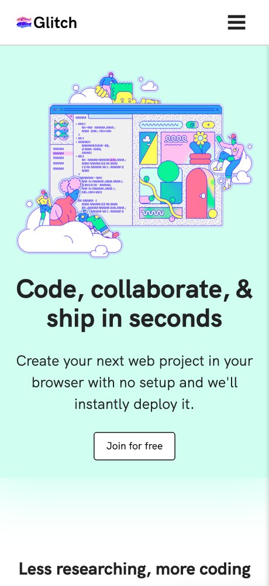
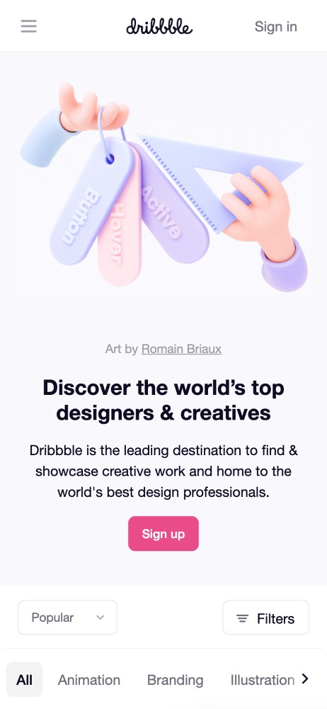
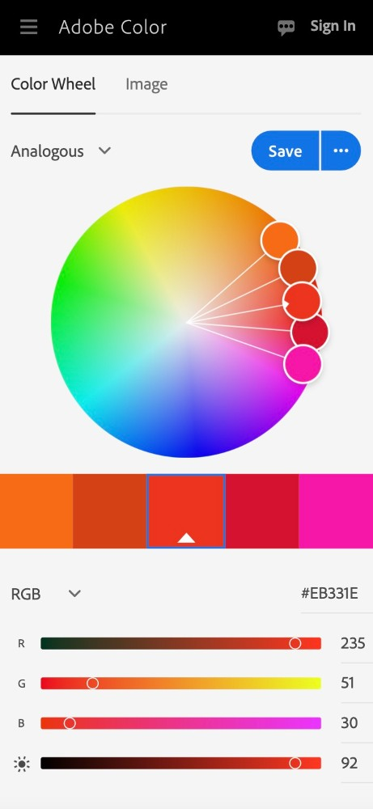

Hick's Law
Glitch
glitch.com

Although the website illustrates multiple design principles, I
specifically wanted to use the glitch.com homepage as an example
of Hick's Law. By providing minimal options, Glitch has removed
possible distractions from the viewer. They either select the
"Join for free" button or they choose the menu in the
upper-righthand corner. Instead of overwhelming mobile viewers,
Glitch has provided them with a simple introduction to the site,
as well as next-step instructions.
Visual Hierarchy
Dribble
dribble.com

Visual Hierarchy is exemplified throughout Dribble's homepage. The
viewer's eye is immediately drawn to the large, pink, purple, and
blue graphic and then the bright pink "Sign up" button. From
there, our eyes naturally move from the larger, bolder text to the
smaller text, and then to the navigation. By utilizing the size
and color of their content, Dribble's designers have accomplished
visual hierarchy.
Fitt's Law
Adobe Color Wheel
color.adobe.com

In my opinion, Adobe's Color website conforms perfectly to Fitt's
law - "The bigger the object and the closer it is, the easier it
is to use". By expanding and centering the brightly colored wheel,
Adobe has ensured that the tool hasn't lost any functionality for
mobile users. In fact, the wheel takes up a majority of the screen
space. The color picker icons are also the perfect size for
viewers' fingertips, and they've collapsed the usual lefthand menu
items into a pull-down menu.